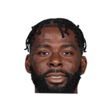

Brian Lewis:Blake Griffin on former #Pistons teammate James Ennis, whom the #Nets are expected to sign:
“Great guy plays hard, great defense. Kind of just one of those guys that can do a little bit everything.”

3 quotes about James Ennis from 3 players, coaches and executives, newest first. Each one links to its original source.
Brian Lewis:Blake Griffin on former #Pistons teammate James Ennis, whom the #Nets are expected to sign:
“Great guy plays hard, great defense. Kind of just one of those guys that can do a little bit everything.”
Harden said in an interview with FOX 26 Sports.
“I think last year it was great for us because we kind of built our chemistry up before training camp,and then obviously adding Chris (Paul) and adding PJ (Tucker), we got a year under our belt. Bringing other guys in, James (Ennis) and 'Melo (Carmelo Anthony), just got to get them acclimated before training camp starts, something we need.”
Mike D'Antoni:
“I think James Ennis can be really good. I think people are downplaying him. Gerald Green will take another step forward. The De'Anthony Melton kid looked really good... If we're going to beat Golden State...you gotta take some chances... I think the worst we're going to be is great.”